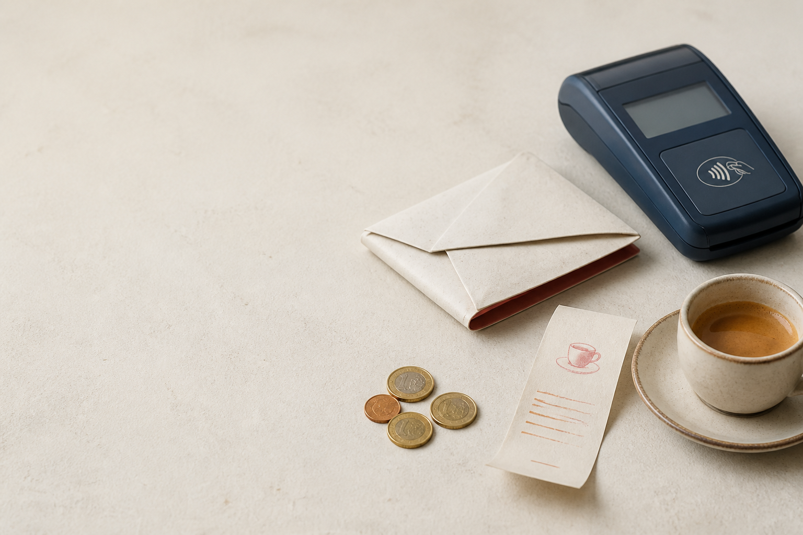

i contanti
/i konˈtanti/ · sostantivo pluraledenaro sotto forma di monete o banconote
中文：现金
L'uso dei contanti sta diminuendo in molti paesi. 中文：许多国家使用现金的情况正在减少。
中文：美国人使用更少的现金，但仍会随身携带。
通过一篇意大利语短文学习支付和日常习惯的表达。意大利语为主，中文帮助理解。

每个按钮对应项目内 MP3 文件。
denaro sotto forma di monete o banconote
中文：现金
L'uso dei contanti sta diminuendo in molti paesi. 中文：许多国家使用现金的情况正在减少。
normale o caratteristico di qualcosa
中文：典型的；通常的
In una settimana tipica, molti giovani usano poco denaro contante. 中文：在典型的一周里，许多年轻人很少使用现金。
le persone che vivono insieme nella stessa famiglia
中文：家庭；家庭成员
I nuclei familiari con un reddito più alto usano meno contanti. 中文：收入更高的家庭使用更少现金。
avere qualcosa addosso o nella propria borsa
中文：随身携带
Molte persone portano ancora contanti con sé. 中文：许多人仍然随身带着现金。
non spesso; quasi mai
中文：很少；罕见地
Io pago raramente in contanti. 中文：我很少用现金付款。
完整保留 8 段与逐段中文。
Gli americani usano sempre meno contanti, ma molti continuano a portarli con sé.
È quanto emerge da un nuovo sondaggio del Pew Research Center. Tra maggio e giugno, il centro ha chiesto a quasi diecimila adulti statunitensi come usano i contanti.
Oggi il 42% dice di non usare affatto contanti per pagare durante una settimana tipica. Nel 2015 questa percentuale era del 24%.
I contanti sono meno importanti per le persone con più denaro.
Tra i nuclei familiari che guadagnano almeno centomila dollari all'anno, solo il 4% dice di usarli per tutto o quasi. Tra le famiglie che guadagnano meno di trentamila dollari, la percentuale è ancora del 26%.
Anche i giovani americani usano poco denaro contante. Più della metà degli adulti sotto i trent'anni non ne usa durante una settimana tipica. Tra le persone di 65 anni o più, invece, soltanto un terzo dice di non usare contanti.
Pur usandoli meno di prima, molti americani li portano ancora con sé. Il 46% afferma di farlo sempre o la maggior parte del tempo. Tra le persone di 65 anni o più, la percentuale sale al 69%.
Tra gli adulti sotto i trent'anni, solo il 29% porta contanti sempre o quasi sempre; il 45% dice di farlo raramente o mai.
4 个可直接套用的表达。
用于表达“比以前用得更少”。
中文句型：我用……比以前少。
Uso meno contanti di prima.中文：我用的现金比以前少。
表示“我随身携带……”。
中文句型：我随身带着……
Porto sempre il telefono con me.中文：我总是随身带着手机。
用来加强否定：完全不、根本不。
中文：完全不……
Non uso affatto i contanti.中文：我完全不用现金。
表示“大部分时间”。
中文：大多数时候
Porto contanti con me la maggior parte del tempo.中文：我大多数时候都会带着现金。
完整 5 题；做完可重做。
1. Io ______ ho tempo per suonare la chitarra.
2. In una settimana ______, faccio tre ore di esercizio.
3. Non voglio ______ contanti con me.
4. Molti ______ hanno un animale domestico.
5. Non ho portato ______ con me.
完整 5 个原网页讨论题。
中文：你大部分时间会带现金吗？
中文：近来你更少使用现金付款吗？
中文：你最喜欢在哪些商店购物？
中文：你上一次买到让自己非常兴奋的东西是什么时候？
中文：你认识不喜欢购物的人吗？